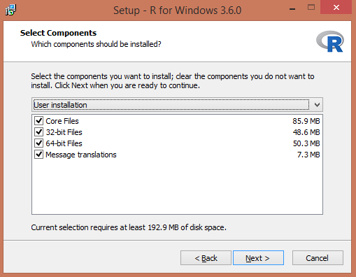

Kapitel 2 Installation
Vid progammering är det mycket viktigt att noga följa instruktioner.
- Installera R
- Installera RSTudio
2.1 Installation av R
2.1.1 Installation av R på MacOS
- Ladda ner den senaste versionen från https://cran.r-project.org/bin/macosx/.
- Ladda ner pkg-filen under Latest release. Öppna den nedladdade .pkg-filen och installera R.
2.1.2 Installation av R på Windows
Gå till hemsidan https://cran.r-project.org/bin/windows/base/.
Klicka på ‘’Download R 3.6.0 for Windows’’ (om det är den senaste versionen)

Dubbelklicka på ‘’R installer’’ för att starta installationen.
Välj språk och tryck OK.

- Välj Next.

- Välj sökväg för din installation. Låt default vara. Klicka Next.

- För att förenkla, välj alla komponenter för installation. Klicka Next.

- Klicka No (accept defaults).

- För att lägga till R i Startmenyn, klicka bort kryssrutan nedan. Klicka Next.

- Välj om du vill ha genvägar. Klicka Next.

- Installation börjar! Starta R när den är klar.

- Starta R för första gången. På Windows ser det ut så här.


2.2 Installation av RStudio
Av olika anledningar väljer vi att inte arbeta i R Editor utan vi väljer RStudio. Stäng därför ner R.
- Gå till https://rstudio.com/products/rstudio/download/}.
- Välj RStudio Desktop Free.
- Välj sedan den version stämmer överens med ditt operativsystem.
- Installera (på Windows) genom att klicka Next->Next->Install
Starta RStudio. Till vänster finns Console där resultat presenteras. De övriga två panelerna till höger kommer vi återkomma till när det är aktuellt.

2.3 Paket
En viktig styrka med R är det stora antalet tillgängliga paket utvecklade av användare. Grundinstallationen av R är nämligen tämligen begränsad vad gäller funktionalitet, men med alla paket utvidgas den statistiska verktygslådan, de grafiska möjligheterna och förmågan att hantera olika typer av data rejält. Det finns ungefär 15000 paket på “The Comprehensive R Archive Network” (CRAN) som är Rs arkiv för paket:
https://cran.r-project.org/web/packages/available_packages_by_name.html
Det finns ytterligare tusentals andra paket som dock inte genomgått samma granskning som paketen på CRAN, till exempel på github. Eftersom antalet paket är överväldigande för nybörjaren kan det vara ett stöd att känna till de vanligaste paketen. Ett förslag på en lista över viktiga paket finns här:
https://support.rstudio.com/hc/en-us/articles/201057987-Quick-list-of-useful-R-packages
För att installera ett paket skriver man in paketnamnet med ett kommando alternativt använda menyn i RStudio under *Tools > Install Packages**.
Vi exemplifierar nu med ett paket som hjälper oss att läsa data från Excel-filer. Funktionalitet för inläsning från Excel-filer finns inte i basversionen av R, därför är detta paket nödvändigt om data är sparat i en Excelfil.
Vi installerar paketet readxl genom att i Console skriva in install.packages("readxl") och trycka enter.
Som tidigare nämnt går det även att installera paket via menyn.
Efter installationen finns paketet sparat på din dator. R har emellertid inte ännu aktiverat det. Genom att skriva library("readxl") och trycka enter aktiveras paketet.
Nu kan analyser i R utnyttja paketets funktionalitet.
Observera att ett paket måste aktiveras på nytt varje gång RStudio öppnas. Dock behövs det bara installeras en enda gång.